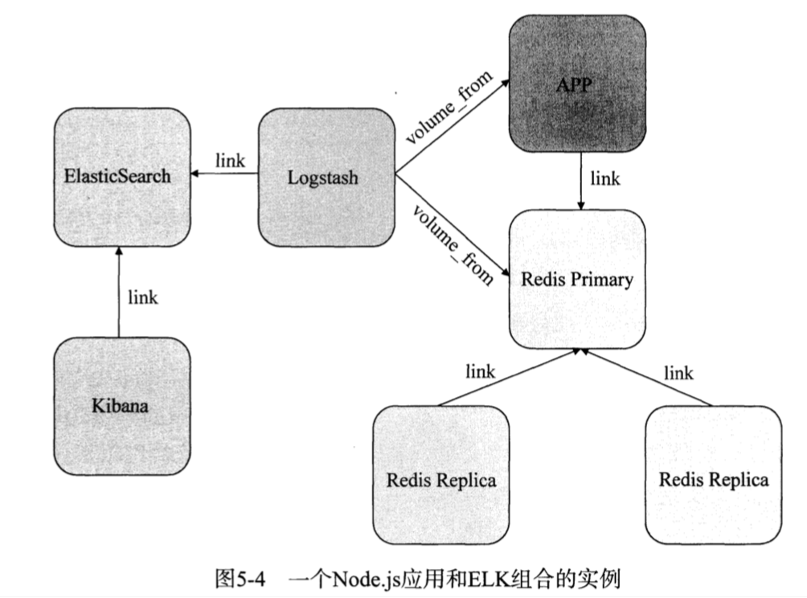
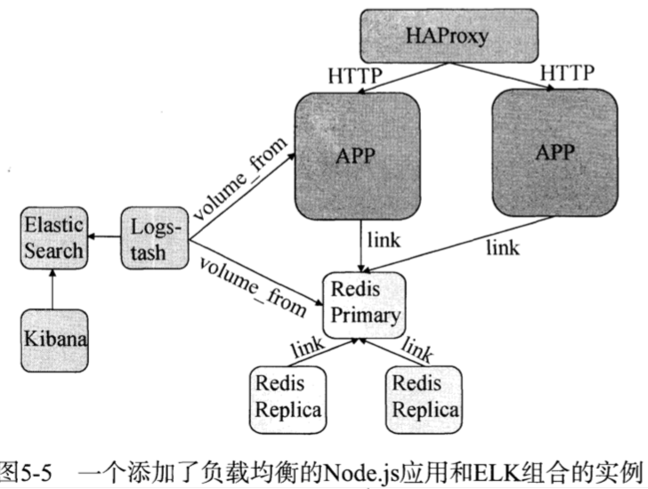
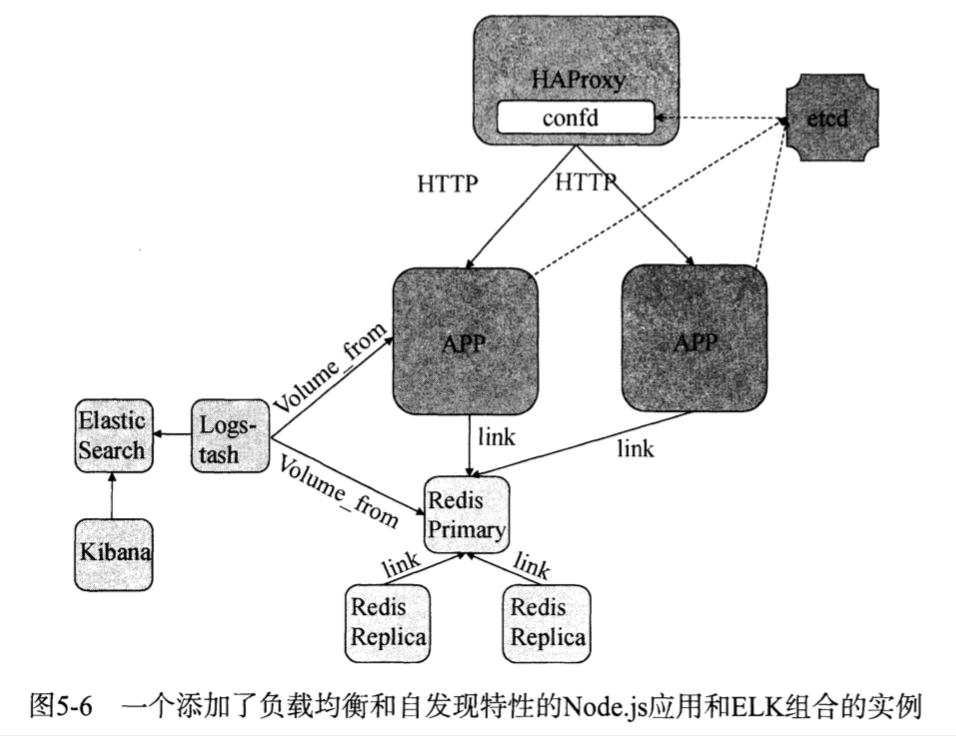

| Title | Date | Modified | Category |
|---|---|---|---|
| docker | 2019-05-29 12:00 | 2019-05-29 12:00 | micros |
1. Docker
1.1. 概述
1.1.1. Container

1.1.2. Docker
事实上的标准
docker，优势，可以构建一个隔离的，稳定的，安全地，高性能的容器运行环境。
1.2. 使用
docker help
1.3. Docker 与微服务




1.4. Docker周边工具
1.4.1. 运维工具
- Ansible
1.4.2. 网络支持
- Pipework
- Flannel
- Weave Net
- Calico
1.4.3. 监控与日志
- cAdvisor 原生集群监控
- Logspout 日志处理
- Grafana 数据可视化
- Heapster
- Prometheus
- EFK
- Filebeat
- ELK (ElasticSearch，Logstash，Kibana)
- Fluentd
Graylog
Cat
- Zipkin
- Pinpoint
- InfluxDB
1.4.4. Docker持续集成
Drone 轻量级CI工具
Travis CI 著名的CI/CD服务商
1.4.5. 私有镜像仓库
- https://github.com/docker/distribution
- VMWare Harbor
- SUSE Portus
1.4.6. 公有云
- GKE
1.4.7. 集群管理面板
- Shipyard
- Portainer **
- Panamax
- Seagull
1.5. 基于Docker的PaaS平台
- Deis 轻量级PaaS平台
- Tsuru 可扩展PaaS平台, 基于Swarm
- Flynn 模块化PaaS平台
- openshift
1.5.1. 操作系统
- CoreOS
- RancherOS
- Red hat Atomic
- VMWare Photon
1.5.2. Serverless
- Kubeless
- Function
- Trigger
- Fission
- OpenFaaS
1.6. 参考资料
1.6.1. GitHub
1.6.2. WebSite
1.6.3. Books
- 《Docker技术入门与实战（第3版）》